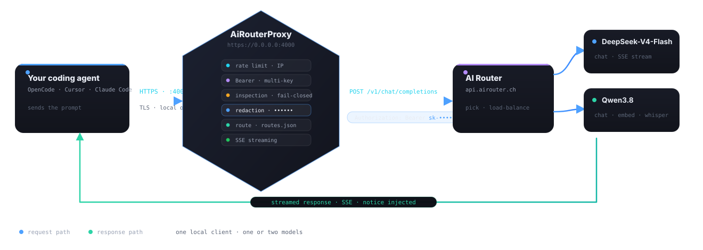

A request, walk by walk
Every request that enters the proxy passes the same ordered pipeline. Nothing is forwarded that did not pass every gate.

The pipeline (in order)
Rate limit per client IP
Checked before authentication, so floods and brute-force never reach the router. Over the window → 429 + Retry-After.
Local authentication
Bearer LocalKey or a LocalKeys list (multi-key rotation). Missing or wrong key → 401. Each refusal writes to the event log: lengths and hashes, never the key.
Method + route resolution
Only GET/POST (405 otherwise). The route table matches by longest prefix with segment boundary, swaps in that route’s key and rewrites the path. No route → 404; route without key → 502.
Fail-closed body inspection
Only JSON passes. text/plain/unknown → 415; invalid JSON → 400; body over the limit → 413. A body that could not be inspected is never forwarded.
Secret redaction
Four layers: sensitive field names (convention-agnostic — api_key, ApiKey, API-KEY, apikey all match, plus auth/session/id token and JWT/signing-key families), known formats (sk-…, ghp_, AIza…, glpat-, dop_v1_, PyPI, Discord, Azure…), key: value context and long high-entropy tokens. Every match becomes a fixed •••••• — the structure is never touched.
Forward + SSE streaming
The request goes out through a pooled client; X-AIRouter-Redacted and a notice signal any redaction, and OpenAI / Anthropic / generic SSE is streamed back token by token.
Routing table (as configured today)
| Prefix | Upstream | Key | Notes |
|---|---|---|---|
"" (default) | https://api.airouter.ch | default route key | /v1/models, /v1/chat/completions… |
/openrouter | https://openrouter.ai/api | OPENROUTER | 100+ models |
Hot reload: routes.json and redaction.json are picked up live — no service restart needed. Rate-limit settings are read at startup.
Precedence: config files load in order — appsettings.json, appsettings.Server.json, then redaction.json/routes.json. Later files win per key across both. In practice: tune redaction in redaction.json and it beats any appsettings.json default for the same key.
/admin surface always reports the redaction state masked — bullets, never values.